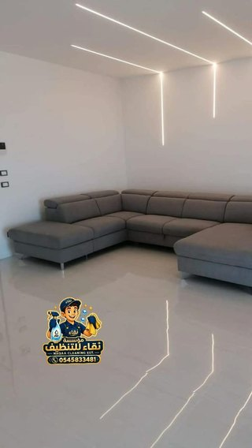

تنظيف الفنادق والشقق الفندقية بالرياض: معايير الغرفة الجاهزة
النزيل ممكن يسامح في بطء الاستقبال، أو في إطلالة عادية، أو في إفطار ما كان على مستوى توقعاته. لكن شعرة على المخدة، أو بقعة في الحمام، أو ريحة غريبة في الغرفة، تبقى في باله وتطلع في تقييمه. وفي سوق الرياض اللي فيه فنادق وشقق فندقية كثيرة، تنظيف فنادق بالرياض صار من أول الأشياء اللي يقارن فيها النزيل بين مكان ومكان.
في هالدليل نشرح وش يعني "الغرفة الجاهزة" بشكل عملي، ونعطيك قائمة فحص غرفة غرفة، ونفرق بين التنظيف اليومي وتنظيف التسليم والتنظيف العميق، ونقترح جدول تشغيلي. والكلام هنا يخص تنظيف شقق فندقية بالرياض كمان، وكل التفاصيل اللي تدخل في تنظيف غرف الفنادق بالرياض من المخدة لين المصرف.
💡 المعايير هنا تشغيلية عملية شائعة في قطاع الضيافة، ومو معايير رسمية أو بنود تصنيف. اشتراطات التراخيص والتصنيف الرسمية تراجعها من الجهة المختصة، وكل منشأة لها سياساتها الداخلية.
تنظيف فنادق بالرياض: ليش النظافة أول شي يقيمه النزيل؟
النزيل يدخل الغرفة وهو تعبان من سفر أو من يوم طويل. وأول خمس دقايق، يمسح المكان بعينه: السرير، والحمام، والأرضية، والريحة. وكل شي ثاني يجي بعدين. ولو لقى شي ما عجبه في هالخمس دقايق، بيبدأ يدور على أشياء ثانية. وهالانطباع غالبًا يطلع في التقييم حتى لو باقي الإقامة كانت ممتازة.
والمشكلة إن غرفة وحدة مهملة تكفي. فندق فيه مية غرفة نظيفة، وغرفة وحدة فيها بقعة على الشرشف، والنزيل اللي في هالغرفة ما يدري عن الباقي. ولهذا تنظيف فنادق بالرياض يحتاج نظام ثابت يطلع نفس النتيجة في كل غرفة، كل يوم، مع كل عامل. وفي تنظيف غرف الفنادق بالرياض، المطلوب إن كل غرفة تطلع بنفس المستوى كل يوم.
موقف من واقع الضيافة
تخيّل مشغّل شقق فندقية في حي الملقا، عنده عشر وحدات، وجاه في نفس اليوم ثلاث حجوزات متتالية: نزيل يطلع الساعة اثنعش، ونزيل جديد يوصل الساعة ثنتين. عنده ساعتين بس عشان يجهز الشقة. العامل دخل مستعجل، غير الشراشف، ومسح الحمام، وكنس، وطلع. والشقة من برا تبان جاهزة.
بس النزيل الجديد وصل، وفتح الثلاجة ولقى علبة عصير من النزيل اللي قبله. ودخل الحمام ولقى شعر في مصفاة الدش. وفي الليل، لاحظ غبار على الطاولة اللي جنب السرير. ما كانت مشاكل كبيرة، لكن كل وحدة منها تقول إن الشقة ما انفحصت بعد التنظيف. وفي صباح اليوم الثاني، كتب ملاحظته في تطبيق الحجز. ومثل هالموقف يتكرر كثير في تنظيف شقق فندقية بالرياض، وحله قائمة فحص واضحة يمشي عليها العامل، وشخص يفحص قبل ما يسلم المفتاح، حتى لو الوقت ضيق.
وش يعني الغرفة الجاهزة؟
الغرفة الجاهزة هي الغرفة اللي يدخلها النزيل وما يلقى فيها أي أثر للي قبله، وكل شي فيها شغال ومرتب. وبشكل عملي، تشمل أربع أشياء:
- نظافة ظاهرة وخفية: الأسطح والأرضيات والحمام نظيفة، ومعها تحت السرير وخلف الطاولات وداخل الأدراج والمصارف
- ريحة منعشة طبيعية: بدون ريحة دخان أو رطوبة أو أكل، وبدون معطرات قوية تغطي ريحة ثانية
- ترتيب موحد: كل غرفة بنفس الترتيب، المخدات بنفس الطريقة، والمستلزمات في نفس الأماكن
- سلامة الأجهزة: التكييف والإضاءة والتلفزيون والسخان والقفل والخزنة كلها شغالة
وفي تنظيف غرف الفنادق بالرياض، الغرفة ما تعتبر جاهزة لين تنفحص على هالأربع أشياء. وفي تنظيف فنادق بالرياض، الفرق بين "نظيفة" و"جاهزة" هو الفحص بعد التنظيف.
تنظيف غرف الفنادق بالرياض: قائمة معايير الغرفة الجاهزة غرفة غرفة
هذي قائمة تحقق تقدر تطبعها وتعدلها حسب نوع وحداتك. والترتيب داخل كل غرفة من الأعلى للأسفل، والأرضيات آخر شي:
غرفة النوم
- الفرش: شراشف وأكياس مخدات نظيفة لكل نزيل جديد، بدون شعر أو بقع، ومشدودة بشكل موحد
- المراتب: فحص البقع، وواقي المرتبة نظيف، وتقليب المرتبة حسب الجدول
- الوسائد والبطانيات: نظيفة وبدون ريحة، والاحتياطية في الدولاب مغلفة أو نظيفة
- الخزائن والأدراج: فاضية من أي أغراض للنزيل السابق، ونظيفة من الداخل، والعلاقات كاملة
- الأسطح: الكومدينات والطاولات والمكتب بدون غبار أو بصمات
- الستائر: نظيفة وتنفتح وتتسكر بسهولة، بدون غبار على الحواف
- تحت السرير وخلف الكومدينات: بدون غبار أو أغراض منسية
- الإضاءة والأفياش ومفاتيح الكهرباء: شغالة ونظيفة
وفي تنظيف غرف الفنادق بالرياض، غرفة النوم هي اللي يقضي فيها النزيل أغلب وقته، وأي تفصيلة فيها تنلاحظ.
دورة المياه
- الحوض والحنفية: بدون ترسبات أو بقع ماء
- المرحاض: نظيف من الداخل والخارج والقاعدة، والغطاء ثابت
- الدش أو البانيو: بدون شعر أو صابون متبقي، والفواصل نظيفة، وزجاج الكابينة بدون خطوط
- المناشف: نظيفة ومطوية بشكل موحد، وعددها حسب عدد النزلاء
- المرايا: بدون بقع أو خطوط
- المصارف: مصفاة الدش والمغسلة بدون شعر، وبدون ريحة
- المستلزمات: صابون وشامبو وورق تواليت كاملة
- السلة: فاضية ونظيفة بكيس جديد
والحمام في تنظيف فنادق بالرياض هو أكثر مكان يكشف مستوى التنظيف، لأن الشعرة الوحدة فيه تبان.
المطبخ الصغير في الشقق الفندقية
- الأسطح والكاونتر والمغسلة: نظيفة وناشفة
- الثلاجة: فاضية تمامًا من أغراض النزيل السابق، ونظيفة من الداخل، وريحتها طبيعية
- الميكروويف والفرن: نظيفة من الداخل
- الأواني: نظيفة ومرتبة في الخزائن، وعددها كامل
- الكاتل وماكينة القهوة لو موجودة: نظيفة وفاضية من الماء القديم
- سلة المطبخ: فاضية بكيس جديد
وفي تنظيف شقق فندقية بالرياض، المطبخ هو اللي يفرق الشقة الفندقية عن غرفة الفندق، وهو كمان أكثر مكان تنسى فيه أغراض النزيل السابق.
الأرضيات والسجاد والنوافذ والشرفات
- الأرضيات: مشفوطة وممسوحة، مع الزوايا وتحت الأثاث
- السجاد والموكيت: بدون بقع، ومشفوط
- النوافذ من الداخل: بدون بصمات، والمجاري بدون غبار
- الشرفة: نظيفة ومرتبة، والكراسي ممسوحة
وغبار الرياض يقعد على النوافذ والشرفات بسرعة، فهالجزء في تنظيف فنادق بالرياض يحتاج اهتمام أكثر بعد العواصف.
الروائح والتهوية والتكييف
- تهوية الغرفة بعد خروج النزيل، خصوصًا لو كان فيه ريحة
- فتحات التكييف: بدون غبار ظاهر
- المكيف: شغال ويبرد، وما يطلع ريحة
- المعطر: خفيف، وبعد ما تكون الريحة الأصلية نظيفة
والريحة أول شي يحسه النزيل لما يفتح الباب، قبل ما يشوف أي شي. وفي تنظيف غرف الفنادق بالرياض، الريحة الطبيعية النظيفة تعطي انطباع إن الغرفة انتظفت فعلًا.
محتاج تنظيف احترافي؟
فريقنا ينسق مع إدارة الفندق أو الشقق أوقات التسليم بين النزلاء، عشان الغرفة تكون جاهزة قبل موعد الدخول بدون ما يتأخر الحجز اللي بعده
الفرق بين التنظيف اليومي والتسليم والتنظيف العميق
ثلاث أنواع تنظيف، وكل واحد له هدف ووقت ومستوى:
التنظيف اليومي أثناء الإقامة
تنظيف خفيف والنزيل ساكن: ترتيب السرير، وتفريغ السلال، ومسح الحمام، وتبديل المناشف حسب طلب النزيل أو سياسة الفندق، وتعبئة المستلزمات. والهدف إن الغرفة تبقى مرتبة بدون ما يحس النزيل إن أحد لمس أغراضه. وفي تنظيف فنادق بالرياض، التنظيف اليومي يحترم خصوصية النزيل وأغراضه، وما يحرك شي من مكانه بدون داعي.
تنظيف التسليم بين النزلاء
أهم تنظيف في الفندق. النزيل طلع، والغرفة لازم ترجع كأنها ما انسكنت: تبديل كل الفرش والمناشف، وتنظيف كامل للحمام والمطبخ والأسطح والأرضيات، وفحص الأدراج والخزائن والثلاجة من أي أغراض منسية، وفحص الأجهزة. وفي تنظيف شقق فندقية بالرياض، التسليم هو اللي يحدد تجربة النزيل الجديد كلها.
التنظيف العميق الدوري
تنظيف يوصل للأماكن اللي ما يوصلها التسليم: غسيل السجاد والكنب والمراتب، وتنظيف الستائر، وخلف الأثاث الثقيل، وفتحات التكييف من الداخل، والفواصل في الحمامات بعمق، والنوافذ من برا. ويكون شهري أو كل كم شهر حسب الإشغال، وغالبًا الغرفة تقفل يوم أو جزء من يوم عشانه.
الجدول التشغيلي المقترح
هذا جدول عام تقدر تعدله حسب عدد الوحدات والإشغال وسياستك:
| النوع | التكرار المقترح | أبرز المهام |
|---|---|---|
| تنظيف يومي | يوميًا أثناء الإقامة أو حسب طلب النزيل | ترتيب السرير، والحمام، والسلال، والمستلزمات |
| تغيير الفرش | مع كل نزيل جديد، وخلال الإقامة الطويلة حسب سياسة المنشأة | الشراشف، وأكياس المخدات، والمناشف |
| تنظيف التسليم | مع كل خروج نزيل | تنظيف كامل، وفحص الأغراض المنسية، وفحص الأجهزة |
| تنظيف عميق | شهري أو كل ثلاثة أشهر تقريبًا حسب الإشغال | السجاد، والكنب، والمراتب، والستائر، وخلف الأثاث، والتكييف |
والإشغال العالي يعني تنظيف عميق أكثر تكرارًا. وفي تنظيف فنادق بالرياض، الوحدات اللي عليها حجوزات متتالية بدون فواصل تتعب أسرع من غيرها. وفي تنظيف غرف الفنادق بالرياض، خل جدول للعميق يغطي كل الغرف بالتناوب، عشان ما تقفل غرف كثيرة في نفس الوقت. وفي تنظيف شقق فندقية بالرياض، اختار للعميق الأيام اللي حجوزاتها أقل.
تنظيف شقق فندقية بالرياض: التسليم بين نزيل ونزيل
في الشقق الفندقية، الوقت بين الخروج والدخول ضيق غالبًا، والحجوزات المتتالية تضغط على الفريق. وعشان يمشي تنظيف شقق فندقية بالرياض بدون تأخير:
- حدد وقت خروج ووقت دخول واضحين، واترك بينهم وقت كافي للتسليم
- خل الفرش والمناشف النظيفة جاهزة في كل وحدة أو قريبة منها
- جهز عربة أو سلة أدوات فيها كل شي، عشان العامل ما يروح ويرجع
- ابدأ بالحمام والمطبخ، لأنها تاخذ وقت أطول
- خل الفحص النهائي لشخص غير اللي نظف لو أمكن
- صور الوحدة بعد التنظيف، خصوصًا لو بتسلم المفتاح بدون ما تشوف النزيل
والتسليم المنظم يقلل الأخطاء أكثر من السرعة. وفي تنظيف فنادق بالرياض، الغرفة اللي تسلمت متأخر نص ساعة أهون من غرفة تسلمت في وقتها وفيها شعرة على المخدة.
تنظيف المناطق المشتركة
النزيل يمر على الاستقبال والممرات والمصاعد قبل ما يوصل غرفته. وهالأماكن تعطي الانطباع الأول، وتحتاج جدول خاص فيها:
- الاستقبال: الكاونتر، والكراسي، والأرضيات، والزجاج، وجولات متكررة خلال اليوم
- الممرات: الأرضيات والسجاد، ومقابض الأبواب، والإضاءة
- المصاعد: الأزرار والمرايا والأرضية، لأنها تنلمس من كل النزلاء
- المطاعم والكافيهات: جدول خاص فيها حسب ساعات التشغيل
- دورات المياه العامة: جولات متكررة مع تعبئة المستلزمات
- المداخل والمواقف: كنس ومسح دوري، خصوصًا بعد الغبار
وفي تنظيف فنادق بالرياض، المناطق المشتركة غالبًا لها فريق مستقل عن فريق الغرف، عشان ما يتأخر التسليم. وفي تنظيف شقق فندقية بالرياض، المبنى الصغير ممكن يكفيه جولة يومية على المدخل والدرج والمصعد.
الشقق الفندقية مقابل غرف الفندق
غرفة الفندق غالبًا مساحتها أصغر، وفيها سرير وحمام وجلسة بسيطة. أما الشقة الفندقية ففيها صالة، ومطبخ، وأحيانًا أكثر من غرفة وحمام. وهذا يغير حجم الشغل ووقته. وفي تنظيف شقق فندقية بالرياض، المطبخ والصالة يضيفون شغل ما يكون في الغرف العادية، والأغراض المنسية تكون أكثر لأن النزيل يطبخ ويخزن أكل. وفي تنظيف غرف الفنادق بالرياض، التركيز أكثر على السرير والحمام والترتيب الموحد بين الغرف. وفي تنظيف فنادق بالرياض، المبنى اللي فيه النوعين يحتاج قائمة فحص خاصة لكل نوع.
الإقامات الطويلة
النزيل اللي يقعد أسابيع أو شهور في شقة فندقية يختلف عن نزيل الليلة الوحدة. يحتاج تنظيف دوري أثناء الإقامة، لكن بتنسيق معه على الموعد، واحترام أكبر لأغراضه. واتفق معه من البداية على أيام التنظيف وتبديل الفرش. ولما يطلع بعد إقامة طويلة، الشقة غالبًا تحتاج تنظيف أعمق من التسليم العادي: المطبخ استخدم كثير، والحمام فيه ترسبات، والمفروشات تحتاج تنظيف. وفي تنظيف شقق فندقية بالرياض، خل للإقامات الطويلة قائمة تسليم خاصة فيها. وفي تنظيف فنادق بالرياض، النزلاء الدائمين جزء كبير من الإشغال في بعض المنشآت، وتجربتهم تبين في تجديد إقامتهم.
الفرش والمناشف والمغسلة
الفرش والمناشف هي أكثر شي يلمسه النزيل مباشرة، ونظافتها تبان بالعين والريحة واللمس. وسواء عندك مغسلة داخلية أو تتعامل مع مغسلة خارجية:
- عدد كافي من الطقم لكل غرفة، عشان التسليم ما ينتظر الغسيل
- فصل الفرش المستعمل عن النظيف في العربات والمخازن
- فحص كل قطعة قبل ما تنفرش: بقع، أو شعر، أو ثقوب
- القطع اللي فيها بقع ما تطلع: تنسحب من الاستخدام
- تخزين النظيف في مكان ناشف ونظيف ومغطى
وفي تنظيف غرف الفنادق بالرياض، شرشف فيه بقعة صغيرة كفيل يخرب انطباع غرفة نظيفة كلها. وفي تنظيف فنادق بالرياض، المغسلة جزء من سلسلة التنظيف، والتنسيق معها يمنع تأخير التسليم.
مواسم الإشغال العالي في الرياض
الرياض فيها مواسم وفعاليات ومعارض ومؤتمرات ترفع الإشغال فجأة. وفي هالأوقات، الحجوزات المتتالية تزيد، ووقت التسليم يضيق، والفريق يتعب. وعشان ما ينزل المستوى:
- خلص التنظيف العميق للوحدات قبل الموسم
- جهز طقم فرش ومناشف إضافي
- رتب دعم إضافي للفريق قبل ما يبدأ الضغط
- خل الفحص بعد التنظيف إلزامي حتى لو الوقت ضيق
- بعد الموسم، تنظيف عميق ثاني للوحدات اللي اشتغلت أكثر
وفي تنظيف فنادق بالرياض، المواسم هي اللي تكشف هل النظام يصمد تحت الضغط. وفي تنظيف شقق فندقية بالرياض، المشغلين الصغار يحتاجون يخططون للمواسم بدري أكثر من الفنادق الكبيرة.
أغراض النزلاء المنسية
شاحن جوال تحت السرير، أو ساعة في الدرج، أو أكل في الثلاجة. الأغراض المنسية تتكرر كثير، وطريقة التعامل معها لازم تكون واضحة: العامل يجمعها ويسجلها بالتاريخ ورقم الغرفة، وتنحفظ في مكان آمن حسب سياسة المنشأة. والأكل في الثلاجة يتخلص منه حسب السياسة. والمهم إن ما يبقى أي أثر للنزيل السابق في الغرفة. وفي تنظيف غرف الفنادق بالرياض، فحص الأدراج وتحت السرير والثلاجة جزء ثابت من التسليم. وفي تنظيف شقق فندقية بالرياض، النزيل الجديد اللي يلقى أغراض غيره يحس إن الشقة ما انتظفت.
تدريب فريق التنظيف
النظام يعتمد على الفريق، والفريق يحتاج تدريب واضح:
- طريقة ترتيب السرير والمخدات بنفس الشكل في كل غرفة
- ترتيب العمل داخل الغرفة من الأعلى للأسفل، والحمام بأدوات خاصة فيه
- استخدام المواد المناسبة لكل سطح وعدم خلطها
- طريقة التعامل مع أغراض النزيل وخصوصيته
- تعبئة ورقة الفحص والإبلاغ عن الأعطال
- التعامل مع النزيل لو كان موجود في الغرفة
وصور الغرفة النموذجية المعلقة في غرفة الفريق تساعد كثير، لأن العامل يقارن شغله بالصورة. وفي تنظيف غرف الفنادق بالرياض، التدريب يتكرر مع كل عامل جديد. وفي تنظيف فنادق بالرياض، الفريق المدرب يقلل وقت التسليم مع الوقت، لأنه يحفظ الترتيب.
بعد نزيل مدخن أو معه حيوان أليف
لو المنشأة تسمح بالحيوانات الأليفة، أو صار تدخين في غرفة ممنوع فيها، فالتسليم العادي ما يكفي. الريحة تدخل في الستائر والكنب والسجاد والمراتب، والشعر يعلق في الأقمشة. وهنا الغرفة تحتاج تنظيف أعمق: تهوية طويلة، وغسيل أو تنظيف للمفروشات والستائر، وشفط دقيق، وتنظيف فتحات التكييف. وأحيانًا تحتاج تقفل الغرفة يوم لين تروح الريحة تمامًا. وفي تنظيف غرف الفنادق بالرياض، الأفضل ما تسلم غرفة فيها أثر ريحة لنزيل جديد. وفي تنظيف شقق فندقية بالرياض، خل هالحالات واضحة في شروط الحجز. وفي تنظيف فنادق بالرياض، المعطرات هنا تخلط الريحة وتخليها أسوأ.
الخصوصية والأمان أثناء التنظيف
النزيل يثق إن أغراضه في أمان. ولهذا التنظيف أثناء الإقامة يكون بإذن النزيل أو حسب علامة الباب، والعامل ما يفتح شنط ولا يحرك أغراض شخصية إلا اللي لازم. والباب يبقى مفتوح أو موارب وقت التنظيف حسب سياسة المنشأة، والمفاتيح والبطاقات تحت مسؤولية واضحة. وفي تنظيف فنادق بالرياض، شكوى وحدة عن غرض ضايع ممكن تأثر أكثر من شكوى نظافة. وفي تنظيف شقق فندقية بالرياض، اللي يسلم مفاتيح ذكية أو أرقام دخول، يغيرها بين كل نزيل والثاني حسب نظامه.
عربة التنظيف والأدوات
العامل اللي يروح ويرجع للمخزن كل شوي يضيع ربع وقت التسليم. والعربة المجهزة تحل هالمشكلة. خل في كل عربة: فرش ومناشف نظيفة بعدد الغرف اللي بيشتغل عليها، ومستلزمات الحمام، وأكياس السلال، وفوط بألوان مختلفة للحمام والأسطح والمطبخ، والمنتجات بعلبها الأصلية، ومكنسة صغيرة. وخل للفرش المستعمل كيس أو جزء منفصل في العربة، عشان ما يختلط بالنظيف. ورتب العربة بنفس الشكل كل يوم، عشان أي عامل يلقى اللي يبيه بسرعة.
المواد المناسبة للأقمشة والأسطح
الفنادق والشقق الفندقية فيها أسطح وأقمشة متنوعة، وكل وحدة تحتاج مادة مناسبة. والمادة الغلط ممكن تخرب قطعة غالية أو تترك بقعة دائمة:
- الرخام: منظف متعادل بدون أحماض
- الخشب والأثاث المطلي: منظف خفيف وفوطة شبه ناشفة
- الزجاج والمرايا: منظف زجاج وفوطة ما تترك وبر
- الكنب والكراسي المنجدة: منظف مناسب لنوع القماش بعد تجربته في مكان ما يبان
- السجاد والموكيت: شفط يومي، وتنظيف البقع أول بأول بالطريقة المناسبة
- الستانلس في المطابخ والحمامات: مسح مع اتجاه الخطوط بدون كاشطات
واقرأ تعليمات كل منتج، وما تخلط منتجين مع بعض. وخل قائمة بالمواد المسموحة لكل سطح معلقة في غرفة الفريق.
الأعطال اللي تنكشف أثناء التنظيف
عامل التنظيف أول واحد يلاحظ الأعطال: لمبة محروقة، حنفية تنقط، مكيف ما يبرد، ريموت بطاريته خالصة، ستارة ما تتسكر، قفل ما يشتغل. ولو ما فيه طريقة سهلة يبلغ فيها، النزيل الجاي هو اللي بيكتشفها. خل في ورقة الفحص خانة للأعطال، وطريقة سريعة يرفع فيها العامل البلاغ للصيانة، ومتابعة إن العطل انصلح قبل ما تتسلم الغرفة. والغرفة اللي فيها عطل ما تتعلم "جاهزة" لين ينحل.
الصالة في الشقق الفندقية
الصالة مكان النزيل يقعد فيه ويستقبل ضيوفه، وفيها كنب وطاولات وتلفزيون وأحيانًا طاولة أكل. وتحتاج نفس عناية غرفة النوم: الكنب يتنفض ويتشفط وتترتب مخداته، والطاولات تنمسح من فوق وتحت، والريموت ينمسح، وتحت الكنب ينشفط، والسجاد ينشفط. والستائر والنوافذ في الصالة غالبًا أكبر، وغبارها أكثر. وخل ترتيب الكنب والمخدات موحد في كل الشقق، زي ترتيب السرير.

الأخطاء الشائعة اللي تنزل التقييم
- إهمال خلف الأثاث وتحته: الغبار والأغراض المنسية هناك يلقاها النزيل اللي يدور على شاحن طاح
- إهمال المصارف: الشعر في مصفاة الدش من أكثر الأشياء اللي يشتكي منها النزلاء
- الاعتماد على المعطرات بدل التنظيف: الريحة القوية تغطي مشكلة، والنزيل يحس
- عدم فحص الغرفة بعد التنظيف: العامل المستعجل يفوت أشياء، والفحص يلقطها
- عدم توثيق التسليم: ما تعرف مين نظف ومتى، فما تقدر تتابع
- ترك أغراض النزيل السابق في الثلاجة أو الأدراج
- استخدام نفس الفوطة للحمام والمطبخ
- ترتيب مختلف من غرفة لغرفة، فيبان إن ما فيه نظام
وأغلب هالأخطاء سببها الاستعجال وغياب الفحص. وفي تنظيف فنادق بالرياض، قائمة فحص بسيطة تحل كثير منها. وفي تنظيف غرف الفنادق بالرياض، العامل اللي يعرف إن غرفته بتنفحص يشتغل بانتباه أكثر.
فحص الجودة بعد التنظيف
الفحص ياخذ دقايق، ويمنع أغلب الشكاوي. وهذي ورقة فحص بسيطة يقدر المشرف ينقلها ويعبيها لكل غرفة:
| البند | تم | ملاحظة |
|---|---|---|
| الفرش نظيفة وبدون شعر أو بقع | ||
| تحت السرير وخلف الكومدينات | ||
| الأدراج والخزائن فاضية ونظيفة | ||
| الحمام: الحوض والمرحاض والدش | ||
| مصفاة الدش والمغسلة بدون شعر | ||
| المناشف والمستلزمات كاملة | ||
| الثلاجة فاضية ونظيفة (للشقق) | ||
| الأرضيات والزوايا | ||
| التكييف والإضاءة والتلفزيون شغالة | ||
| الريحة طبيعية ومنعشة | ||
| اسم العامل والمشرف والوقت |
وخل الفحص يكون من شخص غير العامل اللي نظف لو أمكن. وأي ملاحظة تتصلح قبل ما تتعلم الغرفة "جاهزة" في النظام. وفي تنظيف غرف الفنادق بالرياض، ورقة الفحص تخلي كل عامل يمشي على نفس البنود. وفي تنظيف فنادق بالرياض، أرشيف أوراق الفحص يوضح لك الغرف أو العمال اللي تتكرر عندهم الملاحظات.
الأبواب والأقفال والمقابض
باب الغرفة ومقبضه وقفله الإلكتروني أول شي يلمسه النزيل، وآخر شي يلمسه وهو طالع. امسح المقبض من الجهتين في كل تسليم، والباب من الداخل خصوصًا حول المقبض وأسفل الباب. وشيك إن القفل يشتغل، وإن سلسلة الأمان أو المزلاج الداخلي سليم. وعلامة "الرجاء عدم الإزعاج" ودليل الغرفة والقوائم المعلقة على الباب تنمسح وتتبدل لو تلفت. هالتفاصيل الصغيرة تعطي النزيل إحساس بالأمان والنظافة من أول لحظة.
ريحة الممرات
الممرات الطويلة المغطاة بالسجاد تمسك الريحة، خصوصًا لو التهوية ضعيفة أو فيه أكل ينقل من وإلى الغرف. والنزيل يحس بريحة الممر قبل ما يفتح غرفته. فخل شفط السجاد في الممرات يومي، وتنظيف البقع أول بأول، وغسيل السجاد بشكل دوري ضمن التنظيف العميق. وتأكد إن فتحات التهوية في الممرات نظيفة وشغالة. والمعطرات في الممرات تكون خفيفة، وبعد ما تكون الريحة الأصلية نظيفة.
التنسيق بين التنظيف والاستقبال
الاستقبال يحتاج يعرف حالة كل غرفة في كل لحظة: مشغولة، أو بانتظار التنظيف، أو قيد التنظيف، أو جاهزة، أو فيها عطل. وبدون هالتنسيق، ممكن يتسلم نزيل غرفة ما خلصت، أو تنتظر غرفة جاهزة بدون ما أحد يدري. وسواء عندك نظام إلكتروني أو ورقة مشتركة، المهم إن المشرف يحدث الحالة أول بأول، وإن الاستقبال ما يسلم غرفة إلا بعد ما تتعلم "جاهزة" بعد الفحص. ورتب أولويات التنظيف حسب مواعيد الدخول: الغرفة اللي نزيلها يوصل بدري تنظف أول.
غبار الرياض والنوافذ والشرفات
بعد العواصف الرملية، الغبار يقعد على الشرفات وحواف النوافذ، ويدخل من الفتحات للغرف حتى لو كانت مسكرة. وفي الأيام هذي، زيد جولة على مجاري النوافذ والأسطح القريبة منها، والشرفات، وفتحات التكييف. والغرف اللي ما انحجزت كم يوم بعد عاصفة تحتاج مسحة قبل ما تتسلم، حتى لو كانت نظيفة قبلها.
الغرف اللي ما انحجزت فترة
الغرفة اللي بقت فاضية أسبوع أو أكثر ممكن تكون نظيفة من آخر تسليم، لكن الغبار يقعد، والهوا يركد، والماء في المصارف ينشف ويطلع ريحة. فقبل ما تتسلم: هويها، وامسح الأسطح من الغبار، وشغل الحنفيات والدش شوي، واسحب السيفون، وشغل التكييف وتأكد إنه يبرد بدون ريحة. هالجولة تاخذ دقايق، وتمنع إن النزيل يدخل على غرفة ريحتها مقفولة.
سجل التسليم
خل لكل وحدة سجل بسيط: تاريخ ووقت كل تسليم، واسم العامل، واسم اللي فحص، وأي ملاحظة أو عطل. وهالسجل يفيدك لو جت شكوى من نزيل، لأنك تعرف مين نظف ومتى ووش انفحص. ويفيدك كمان تلاحظ الأنماط: غرفة تتكرر فيها نفس الملاحظة، أو عامل يحتاج تدريب إضافي، أو وقت في اليوم يزيد فيه الاستعجال. واحفظ السجلات فترة كافية حسب سياستك.
المناطق المشتركة في الليل
الاستقبال والممرات والمصاعد زحمتها عالية في النهار، وتنظيفها العميق وقت الذروة يزعج النزلاء. فخل الشغل الثقيل، مثل جلي الأرضيات بالمكاين وغسيل السجاد في الممرات وتنظيف الزجاج الكبير، في ساعات الليل المتأخرة أو الصباح الباكر. وخلال اليوم، يكفي جولات خفيفة للأسطح اللي تنلمس كثير ودورات المياه العامة وأي انسكاب.
مستلزمات الضيافة داخل الغرفة
الكاتل والأكواب وأكياس القهوة والشاي والثلاجة الصغيرة كلها يستخدمها النزيل بشكل مباشر. والأكواب لازم تنغسل وتتبدل مع كل نزيل، ما تنمسح بس. والكاتل يتفضى من الماء القديم وينغسل، ويتنظف من الترسبات بشكل دوري. والثلاجة الصغيرة تتفضى وتنمسح من الداخل. والصينية اللي عليها المستلزمات تنمسح، والمستلزمات تتعبى بنفس الترتيب في كل غرفة. وهالتفاصيل الصغيرة ينتبه لها النزيل أكثر من ما نتوقع، لأنه يستخدمها في أول ساعة بعد وصوله.
التكييف والفلاتر في الغرف
مكيف الغرفة يشتغل تقريبًا طول الوقت في الرياض، وفلتره يمسك غبار كثير. والفلتر الوسخ يطلع ريحة ويضعف التبريد، والنزيل يحس فيها أول ما يشغله. خل تنظيف فلاتر المكيفات في جدول التنظيف العميق، ونظف الواجهة الخارجية وفتحات الهوا في التسليم. والتنظيف الداخلي للمكيف وفحصه يكون مع فني الصيانة حسب جدولهم. وأي مكيف يطلع ريحة أو ماء، الغرفة ما تتسلم لين ينفحص.
الغرف المهيأة لذوي الاحتياجات الخاصة
الغرف المهيأة فيها مقابض دعم في الحمام، ومساحات حركة أوسع، وأحيانًا أرضيات مختلفة. وتنظيفها يحتاج انتباه إضافي: المقابض تنمسح لأنها تنلمس كثير، والأرضيات تكون ناشفة تمامًا قبل التسليم عشان ما تكون زلقة، والممرات داخل الغرفة فاضية من أي أغراض أو أثاث يعيق الحركة. ورجع كل شي لمكانه المخصص بعد التنظيف، لأن النزيل ممكن يعتمد على مكان الأشياء.
المسابح والنوادي الرياضية
لو المنشأة فيها مسبح أو نادي رياضي، فهذي مناطق لها جدول خاص. الأجهزة الرياضية تنمسح بشكل متكرر خلال اليوم لأنها تنلمس بأيدي فيها عرق، والمناشف تتوفر وتتبدل، وغرف تبديل الملابس والدش تنظف مثل الحمامات وأكثر. أما معالجة ماء المسبح نفسه وفحصه، فهذا شغل متخصص له جهاته، وفريق التنظيف دوره في الأرضيات حول المسبح والكراسي والمناطق المحيطة.
منطقة الإفطار والمطعم
منطقة الإفطار تستقبل كل النزلاء في ساعات محددة، وتحتاج تنظيف سريع بين الدفعات: الطاولات، والكراسي، والأرضية تحت الطاولات، ومنطقة البوفيه. وبعد انتهاء وقت الإفطار، تنظيف شامل يجهزها لليوم الثاني. ومطبخ المطعم له جدول واشتراطات خاصة فيه، ويتعامل معه فريق المطبخ أو فريق متخصص في المطابخ.
التعامل مع شكوى النزيل
مهما كان النظام قوي، بتجي شكوى في يوم من الأيام. والطريقة اللي تتعامل فيها معها تفرق: اعتذر للنزيل، وأرسل عامل فورًا يصلح الملاحظة، أو انقل النزيل لغرفة ثانية لو المشكلة كبيرة. وبعدها، ارجع لسجل التسليم وشوف مين نظف ومين فحص، ووش اللي فات. وناقشها مع الفريق بدون لوم، عشان تعرف السبب: استعجال، أو بند ناقص في قائمة الفحص، أو تدريب يحتاج تكرار. وكل شكوى تتحول لتعديل بسيط في النظام تقلل الشكاوي اللي بعدها.
قائمة تسليم سريعة بالترتيب
لو تبي ترتيب مختصر يعلقه العامل في عربته، هذا تسلسل التسليم من لحظة دخول الغرفة:
- افتح النوافذ أو شغل التهوية، وشيل الفرش والمناشف المستعملة
- فضّ السلال، وافحص الأدراج والخزائن والثلاجة وتحت السرير من أي أغراض منسية
- الحمام: من فوق لتحت، والمصارف آخر شي
- المطبخ في الشقق: الثلاجة والأسطح والأواني
- الأسطح في الغرف من الأعلى للأسفل
- الفرش والمناشف الجديدة بالترتيب الموحد
- تعبئة المستلزمات
- الأرضيات آخر شي
- فحص الأجهزة، ثم ورقة الفحص، ثم تحديث الحالة للاستقبال
الشقق الفندقية الصغيرة بدون فريق ثابت
كثير من المشغلين في الرياض عندهم من وحدتين لعشر وحدات، وما عندهم فريق تنظيف ثابت. وهنا التحدي إن الحجوزات تجي بأوقات مختلفة، والتسليم يحتاج أحد يكون جاهز. والحلول المعتادة: عامل أو عاملين بدوام جزئي مرتبطين بجدول الحجوزات، أو تعاقد مع جهة تنظيف تتابع التقويم وتجي وقت الخروج. وفي الحالتين، خل قائمة الفحص نفسها، واطلب صور بعد كل تسليم، لأنك غالبًا ما بتكون موجود بنفسك.
القاعات والمناسبات داخل الفندق
لو الفندق فيه قاعة مناسبات أو اجتماعات، فهي تحتاج تنظيف قبل كل مناسبة وبعدها. وبعد المناسبات الكبيرة، يكون فيه بقايا أكل وانسكابات على السجاد والكراسي، ولازم تنظف بسرعة قبل ما تلصق البقع. خل فريق مستقل أو وردية خاصة للقاعات، عشان ما تأثر على تسليم الغرف في نفس اليوم، ونسق مع المطبخ وفريق الضيافة على وقت إخلاء القاعة.
الاستعانة بشركة تنظيف متخصصة: متى وبماذا تسأل
الفريق الداخلي يناسب التنظيف اليومي والتسليم في الفنادق اللي إشغالها ثابت. لكن فيه حالات يكون فيها التعاون مع جهة متخصصة أفضل: التنظيف العميق الدوري للسجاد والكنب والمراتب، أو مواسم الإشغال العالي اللي فريقك ما يلحق فيها، أو الشقق الفندقية الصغيرة اللي ما فيها فريق ثابت، أو قبل افتتاح مبنى جديد أو بعد تجديد.
وقبل ما تختار أي شركة تنظيف بالرياض أو جهة تنظيف، اسأل:
- هل عندكم خبرة في الضيافة؟ ووش نوع المنشآت اللي اشتغلتوا معها؟
- كم تحتاجون وقت لتسليم وحدة بين نزيلين؟ وهل تقدرون على الحجوزات المتتالية؟
- كيف تدربون العمال على ترتيب موحد وفحص بعد التنظيف؟
- وش المواد اللي تستخدمونها؟ وهل تناسب الأقمشة والأسطح عندنا مثل الرخام والخشب والكنب؟
- هل تشتغلون بقائمة فحص؟ وهل تعطوننا نسخة؟
- كيف تتعاملون مع أغراض النزلاء المنسية؟
- مين المشرف المسؤول، وكيف نتواصل معه وقت الضغط؟
وفي مؤسسة نقاء للتنظيف، نشتغل في تنظيف فنادق بالرياض على التنسيق مع الإدارة: أوقات التسليم، والتنظيف العميق في الأيام الأقل حجوزات، وقائمة فحص لكل وحدة. وفي تنظيف شقق فندقية بالرياض، نبدأ بمعاينة نفهم فيها عدد الوحدات ونوعها والمواد المناسبة لها. وفي تنظيف غرف الفنادق بالرياض، نرتب مع المشرف عندك طريقة الفحص والتسليم قبل أول يوم شغل.
أسئلة شائعة عن تنظيف الفنادق
الخاتمة
في سوق الضيافة بالرياض، النظافة هي أول اختبار للفندق أو الشقة الفندقية. والغرفة الجاهزة تحتاج نظام ثابت: قائمة معايير غرفة غرفة، وتمييز بين التنظيف اليومي والتسليم والعميق، وجدول تشغيلي واضح، وفحص بعد كل تنظيف، وتوثيق. ومع هالنظام، كل غرفة تطلع بنفس المستوى، مهما كان العامل أو اليوم.
ولو تحتاج تنسيق تنظيف عميق أو تسليم في مواسم الضغط، فريق مؤسسة نقاء يخدم منشآت الضيافة في الرياض، ويرتب معك معاينة وجدول يناسب حجوزاتك.
✨ غرف جاهزة قبل موعد الدخول
نسق معنا معاينة لوحداتك، ونرتب جدول تنظيف وتسليم يناسب حجوزاتك
محتاج تنظيف احترافي؟
تواصل معنا لتنسيق معاينة وجدول تنظيف لفندقك أو شققك الفندقية
- تنظيف تسليم بين النزلاء
- تنظيف عميق للسجاد والكنب والمراتب
- المناطق المشتركة والممرات
- خدمة في كل أحياء الرياض